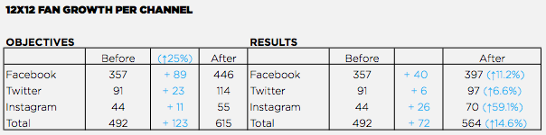
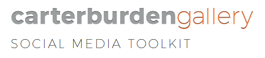

Role: Social Media
Client: Carter Burden Gallery
Project: During my time at POSSIBLE, a global digital agency, aside from daily client work, I was asked to take on a ten week internship project. In a group of five interns all with different roles, I worked with pro-bono client, Carter Burden Gallery (CBG). The gallery's mission is to support the belief that older, lesser-known artists must not be overlooked due to age or decreased marketability in the current art scene.
CBG wanted to compete with the trendy New York City Chelsea gallery scene, while embracing what makes them different, their misson. Additionally, they lacked a connection and interest between their artists, the oldest members of adult society, and millennials. We were asked to increase awareness of their gallery in New York, specifically with millennials, and build their social media presence.
My role in this project was social media strategy and community management. When we took on this client, they had an upcoming exhibition for a group of artists who were all given a 12x12 canvas to work with. I took this concept and and titled our campaign, "12x12: Beyond the Square". Millennials have an interest in rich, personal stories, something that the older artist's of CBG possess. We believed that we could connect CBG with their desired audience if we shared not only the art, but the stories that went on behind the strict 12x12 dimentions of a square.
The gallery had been inconsistenly posting on Facebook, Twitter, and Instagram. On all three chanels, I aimed to share the deeply interesting stories of CBG's artists and increase their followers and posting frequency. I also created the gallery's first Facebook advertisements. Based on our group's target market research and my own insights, I developed two ads targeted towards their current followers and New York millennials with art-specific interests.
At the end of the ten week "12x12: Beyond the Square" campaign, I measured the results along with the marketing sciences intern, and we co-created a report to present to the client. Our team was able to increase CBG's followers by 14.6%, as well as their reach and engagement levels. Check out the full-detailed report below.
To conclude the ten week project, the team decided it was important to leave the client with a digital toolkit. We wanted to give them best practices to run their business by, and as the social media intern, I left CBG with a social media digital toolkit. This toolkit showed them how to conduct their social media, ways to craft campaigns, and the social media necessities as a small business.
